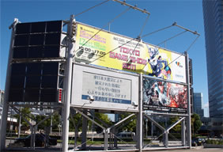
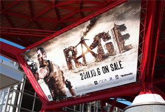
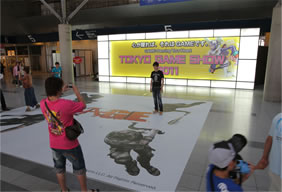
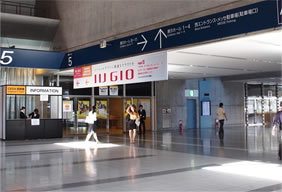
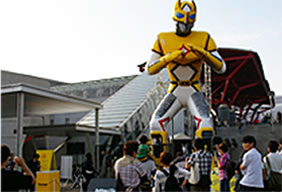
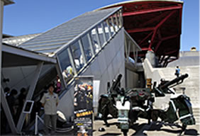
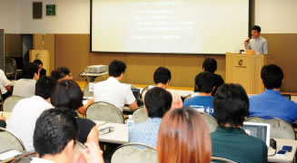
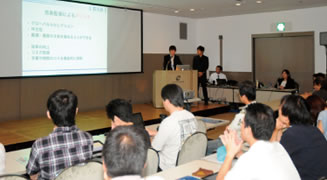

TOP PAGE EXHIBITOR INFO Advertising Menu
EXHIBITOR INFO［Advertising Menu］
Advertising Menu
Tokyo Game Show offers a wide range of advertising menu such as outdoor/indoor banners, website ad, official guidebook ads, digital signage and more.
- 
- 
- 
- 
- 
- 
Business Day Sponsorship
TGS Forum Sponsorship Session is available for BtoB exhibitors to organize presentation of products and services.
- 945,000 yen (incl. tax)/Unit
- 【Date】 September 21 (tentative)
【Venue】 Makuhari Messe International Conference Hall
【Capacity】 140 (tentative)
【Time】 60 minutes
【Equipment】 projector, screen and microphones
【Attendance Fee】 Free
【Registration】 Registration from Website

- ■EDM, Magazine Ad promotions
- ■Insert LOGO in TGS Forum Program
- ■Pre-registration, Tiket Issues, Registration on a day
- ■Attendees List
- ■Issue of Seminar Tickets: Upon Requests
- ■Admission Ticket Issuing: 100
- ■Advertising on the Official Guidebook with 1-page, 4-color
- Please contact to Overseas Management Office for more details.
- 315,000 yen (incl. tax)/Unit
- 【Date】 September 21 (tentative)
【Venue】 Makuhari Messe International Conference Hall
【Capacity】 50 (tentative)
【Time】 30 minutes
【Equipment】 projector, screen and microphones
【Attendance Fee】 Free
【Registration】 Registration from Website

- ■EDM, Magazine Ad promotions
- ■Insert LOGO in TGS Forum Program
- ■Pre-registration, Tiket Issues, Registration on a day
- ■Attendees List
- Please contact to Overseas Management Office for more details.